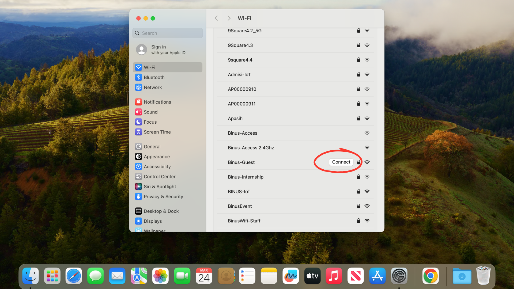

How do I connect my device to the Access Wifi?

Windows
Step 1:
Open the Wi-Fi settings on your device
Open the Wi-Fi settings on your device
Step 2:
Click Icon >

Step 3:
select Binus-Guest, Click Connect
select Binus-Guest, Click Connect

Step 4:
Input Password:Please scan the barcode on the desk, NEXT
Input Password:Please scan the barcode on the desk, NEXT

Step 5:
Wait until the device is successfully connected to the Wi-Fi network
Wait until the device is successfully connected to the Wi-Fi network
macOS
Step 1:
Open the Wi-Fi settings on your device, select Binus-Guest
Open the Wi-Fi settings on your device, select Binus-Guest
Step 2:
Click Join/Connect

Step 3:
Input Password:Please scan the barcode on the desk
Input Password:Please scan the barcode on the desk
Step 4:
Click Join
Click Join
Step 5:
Wait until the device is successfully connected to the Wi-Fi network
Wait until the device is successfully connected to the Wi-Fi network
Tips
- If device not detected, try manual connection
- Check network connection
- Restart device if connection fails